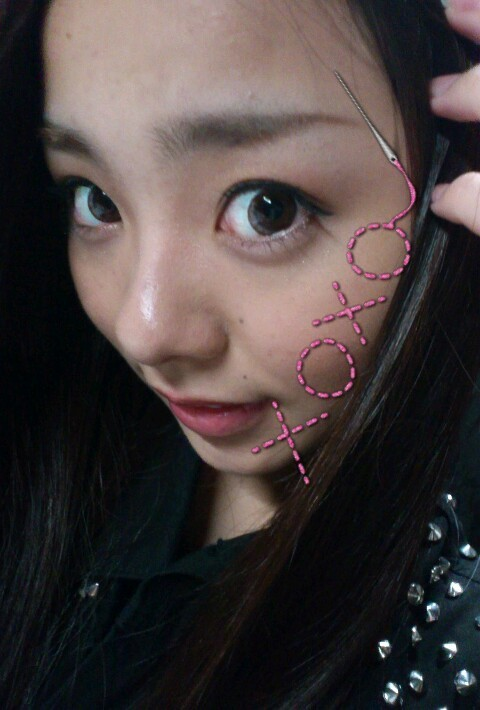

ほいっ♪こんばんわ*・ω・*
ろってぃーですω))
この前
久しぶりにコンタクト
付けたら
ずれちゃった=・ω・=笑

あんねっ、
まひろ♪目がすぐに
いたんぢゃうから
ヨミウリの時、
コンタクト付けて
ミニライブと握手会した
次の日
火傷状態で、
むっちゃ目が真っ赤に
なっちゃって
すごい痛かったwwww^^笑
笑いごとぢゃなぁぁーい。☆
だから あれから
コンタクトはたまにしか
付けなくなっちゃいました*^^*
そして前からずっと
blogに書きたいなっ♪・ω・
ってたことがあって
それを今日は書きますね(⌒‐⌒)
まひろは大好きな曲は
ほんとにいっぱい
あるんだけど、
その内のいくつかを
書きます。
絢香さんの,
『peace loving people☆』
この曲は、
何の罪もない子供達が
なぜ,殺されていくんだろう？
というような気持ちが
込められています。
歌詞を見ると
すぐに意味が分かると
思います!
歌の中に『ひまわり』
っていう歌詞が出てくるん
ですけど、
それは、子供達の笑顔の
ことなんです＾＾
歌詞をblogに書くことは
ダメらしいので
是非みなさんにも
聴いてほしいです(⌒‐⌒)
次は、
福原美穂さんの,
『CHANGE♪』
『優しい赤♪』
CHANGEは中学の頃から
ずっと歌い続けている
曲です。
CMにも
使われていました♪
優しい赤は、
まひろが上京して来た時の
気持ちです。
そして、
まひろが乃木坂46の
オーディションで
ずっと歌っていた歌は
福原美穂
フィーチャリング
AIの
『02』と言う曲です★
カラオケでつい歌って
泣きながら歌ってしまう
曲は,
ドリカムさんの,
『何どでも。』です。ω・
ってな感じで
少しだけ書いてみました*^^*
以上っ♪ろってぃーでしたぁ＾ω＾))
のし。